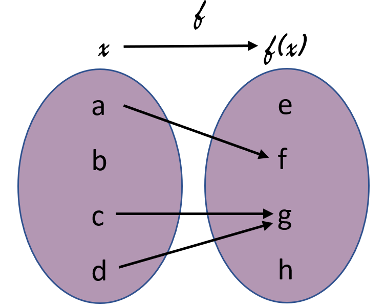
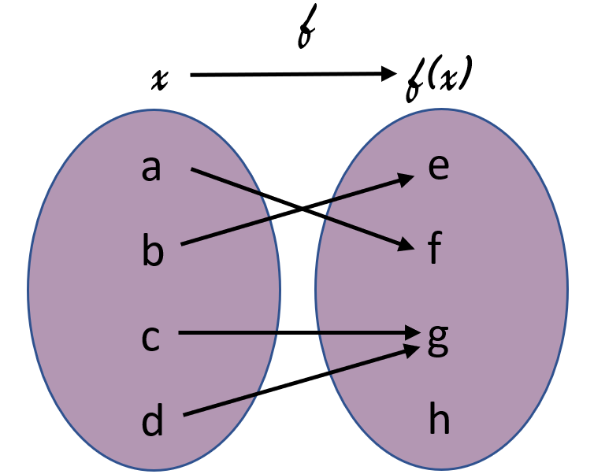
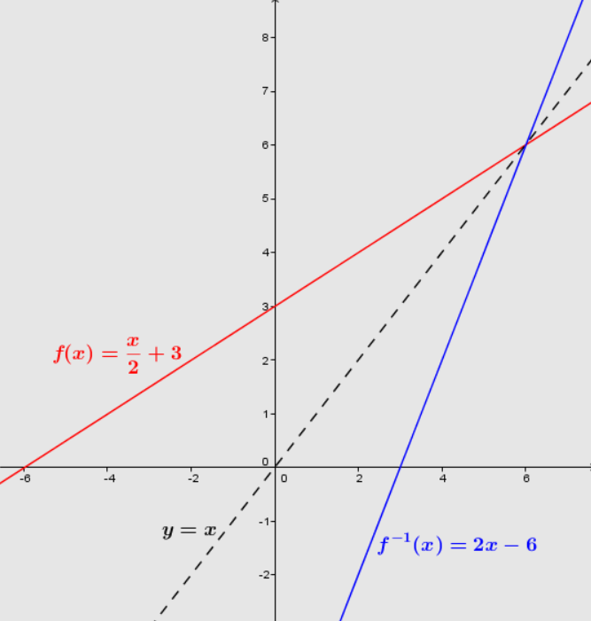

Ein Wort, das einem in den Sinn kommen muss, wenn man von der
Umkehrfunktion spricht, ist das Worteinzigartig. Es
gibt viele verschiedene Fälle, in denen der Begriff der
Umkehrfunktion im Alltag vorkommt. Die Konversation über Zeitzonen ist eine
Umkehrfunktion.
Warum ist das so?
Die deutsche Zeitzone ist im Sommer
+2 und die kanadische Zeitzone ist
-4. Wenn es in Deutschland
12 Uhr ist, ist es in Kanada
6 Uhr. Wir sind also in der Lage,
eine Funktion f zu definieren, mit
der wir die kanadische Zeit
y bestimmen können, wenn wir die
deutsche Zeit x kennen. f: X ➝ Y f(x) = y + 6
X und Y sind die deutsche bzw. die kanadische Zeit.
Wenn ein Kanadier nun die Zeit in Deutschland anhand der Zeit
in seinem Heimatland ermitteln möchte. macht er: y = x - 6
Wir erhalten also eine zweite Funktion
f -1 aus
f, nachdem wir den Wert von
y (Element der Ankunftsmenge) in
Kenntnis von x (Element der
Abfahrtsmenge) ermittelt haben.
Wenn du richtig bemerkst, hat die kanadische Zeit nur eine
und nur eine Entsprechung in der deutschen Zeit.
f -1 wird daher als
Gegenfunktion von
f bezeichnet.
Definition
Mathemathische Definition
Eine Umkehrfunktion ist eine Funktion, bei der
jedes Element in der
Ankunftsmenge* nur
einen und nur einen Vorgänger in der
Ausgangsmenge* hat.
Die Funktion f ist
definiert durch: f: X ➝ Y f(x) = y
Die Gegenfunktion zu
f wird
f -1
genannt und ist definiert durch: f -1: Y ➝ X y = f -1(x)
Beispiel: Die Funktion f(x) = 3x hat
f -1 (x) = x/3
als Umkehrfunktion.
Erklärung
Wir haben oben ein Beispiel genommen; Die Funktion
f(x) = 3x hat
f -1 (x) = x/3
als Umkehrfunktion.
Wie habe das gemacht?
Die richtige frage ist: Wie kann man x in Abhängigkeit von
y ausdrücken?
Erklärung
Wir haben f(x) = 3x.
Man kann das auch schreiben:
y = 3x | geteilt durch 3 y/3 = x | richtige
Anordnung x = y/3
y ist nur ein Wert, den ein Element der Umkehrfunktion
annehmen kann.
Die Umkehrfunktion ist also
f -1(x) = y/3
Die Umkehrbarkeit einer Funktion überprüfen.
Es gibt 3 Möglichkeiten, um zu bestimmen, ob eine
Funktion invertierbar ist oder nicht.
Methode 1
Injektivität und surjektivität
Wenn eine Funktion injektiv und
surjektiv ist, dann ist sie auch bijektiv.
Und jede bijektive Funktion ist auch
invertierbar.
Injektivitat und Surjektivitat werden in der
Lerneinheit zu Funktionen erklart.
Kurze Wiedeholung
Sei die Funktion
f definiert durch:
f: X ➝ Y f(x) = y
Die Funktion f ist
injektiv, wenn
Element x in
X maximal einem Element
y in der Menge
Y entspricht.
Die Funktion f ist
surjektiv, wenn
Element x in
X minimal einem Element
y in der Menge
Y entspricht.
Da unten sie ein paar Beispiel, wie
Beispiel mit Menges-Bildern
Beispiel 1

Beispiel 1: Bijektivität
Die Funktion f ist nicht
injektiv, da die Element c und
d im Definitionsbereich auf
dem selben Element (g) im
Wertebereich zuweisen.
Die Funktion f ist nicht
surjektiv, da der Element
b auf dem keinem Element im
Wertebereich zuweist. Das heißt
Die Funktion f ist also
nicht bijektiv bwz.
hat keine Umkehrfunktion.
Beispiel 2

Beispiel 2: Bijektivität
Die Funktion f ist nicht
injektiv, da die Element c und
d im Definitionsbereich auf
dem selben Element (g) im
Wertebereich zuweisen.
Die Funktion f ist
surjektiv, da jeder Element mindestens auf dem einem
Element im Wertebereich zuweist. Das heißt
Die Funktion f ist also
nicht bijektiv , obwohl sie surjektiv ist.
Beispiel 3
Beispiel 3: Bijektivität
Die Funktion f ist
injektiv, da jeder Element im Definitionsbereich maximal
auf einem Element im Wertebereich zuweist.
Die Funktion f ist auch
surjektiv, da jeder Element mindestens auf dem einem
Element im Wertebereich zuweist. Das heißt
Die Funktion f ist also
bijektiv bzw. hat eine Umkehrfunktion, da sie
injektiv und surjektiv ist.
Injektivitat und Surjektivitat werden in der
Lerneinheit zu Funktionen mehr erklärt.
Methode 2
Mit dem Graphen der Funktion
Man kann auch die Umkehbarkeit einer Funktion mithilfe
seiner graphischen Darstellung prüfen.

Graph: Umkehrfuntion von www.alloprof.qc.ca
f und
g sind zwei Funktionen,
die in diesem Graphen abgebildet sind. Wenn man alle
Punkte, an denen f und
g
sichaufeinandertreffen, erhält man die Funktionsgerade,
die durch f(x) = x definiert ist, was
bedeutet, dass f und
g symmetrisch zu
dieser Achse sind. Und folglich ist
g die Umkehrfunktion
von f und umgekehrt.
Methode 3
Durch Berechnung
Ein andere Möglichkeit wäre den
arithmetischen Ausdruck der Funktion zu benutzen.
Sei f eine Funktion
definiert durch: y = 4x + 1
Das Ziel ist es, den arithmetischen Ausdruck der
Funktion zu verwenden. Wenn es uns gelingt, den Ausdruck
von x in Bezug auf
y zu bestimmen, dann ist
f invertierbar.
In unserem Beispiel gilt y = 4x + 1 | - 1 y - 1 = 4x | dividiert durch 4 y - 1/4 = x |
Änderung der Positionierung x = y - 1/4
Wir konnten den Ausdruck für
x aus dem Ausdruck für
y ableiten. Daher ist
f invertierbar und der Ausdruck seiner
Umkehrfunktion:
f -1(x) = y - 1/4
Ausnahme
f(x) = x2 ist
keine bijektive Funktion, denn wenn
y = x2 dann heißt
x = √y.
Das Problem ist, dass eine Zahl unbedingt positiv sein
muss, um ihre Quadratwurzel zu bestimmen. Wir müssen
also das Intervall der Ergebnismenge verkleinern, um die
Umkehrfunktion zu erhalten. Das bedeutet, dass man nicht
sagen kann, dass die Wurzelfunktion
vollständig bijektiv ist.
Ist das Bezahlen eines Produkts mit Geld eine
bijektive Funktion?
Zusammenfassung
War allles klar?
Wie wir gesehen haben, gibt es viele Beispiele für die
Anwendung der Umkehrfunktion im täglichen Leben. Hier
sind noch einmal die Ziele, die du in dieser
Lektion erreichen musstest.
Ziele diser Lektion
Die Umkehrfunktion mit deinen
einigen Wörter erklären
Beispiele Umsetzung von Umkehrfunktion aus dem
Alltag nennen
Überprüfen ob eine Funktion
bijektiv ist
Die Umkehrfunktion einer Funktion ermitteln
Den Graph einer Umkehrfunktion einer Funktion
zeischen